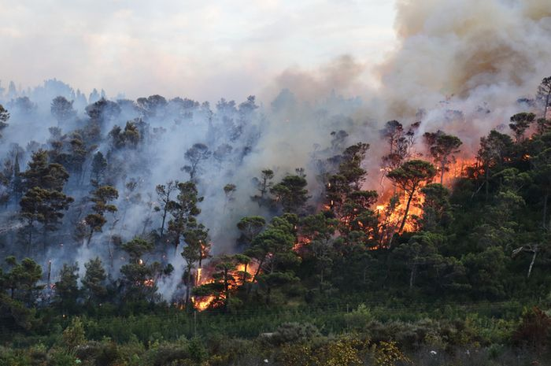
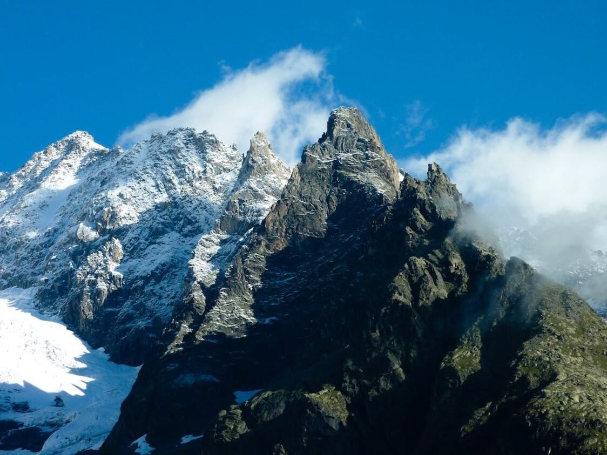
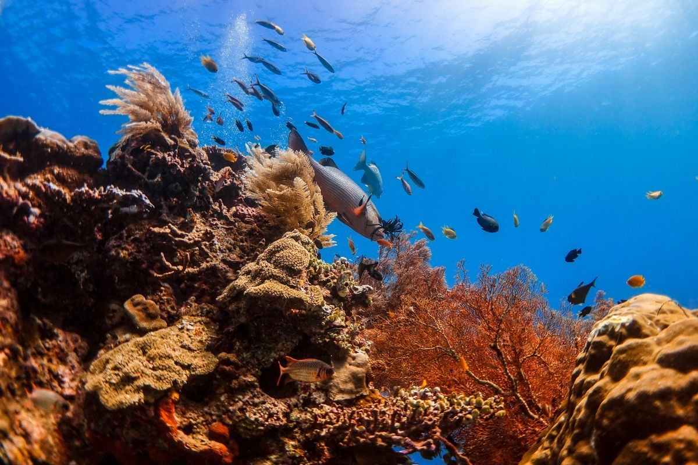
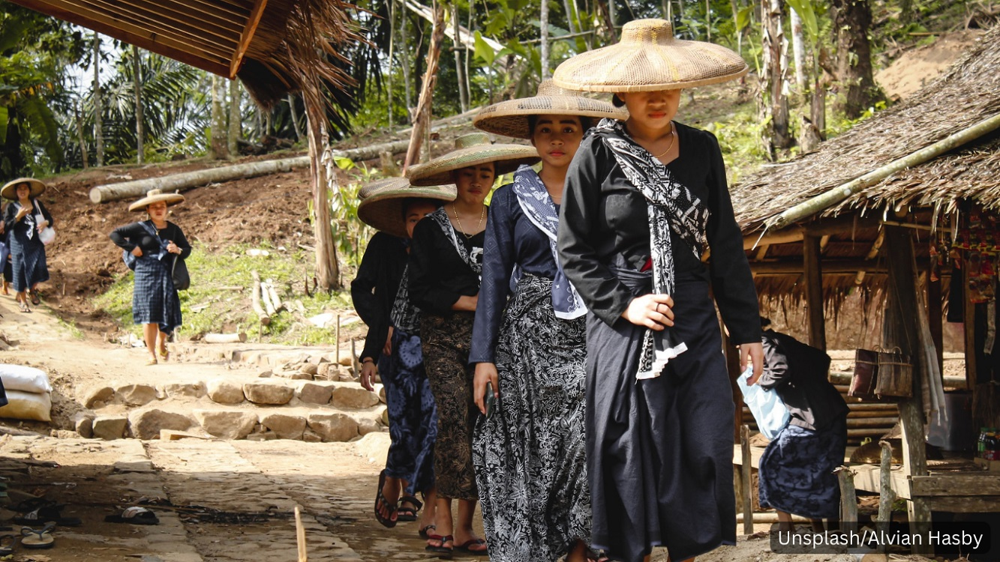
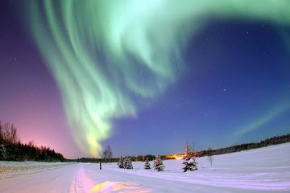

Wildlife
Harimau Sumatra: Sang Predator Terakhir
Populasinya hanya tersisa ratusan, menjadikannya salah satu satwa paling langka di dunia.
Read More →

Forest
Bencana Kebakaran Hutan Kalimantan
Kabut asap dan kerusakan ekosistem meningkat setiap tahun akibat pembukaan lahan.
Read More →

Mountain
Keindahan Pegunungan Jayawijaya
Salah satu pegunungan tropis tertinggi di dunia yang penuh misteri dan kekayaan budaya.
Read More →

Ocean
Dunia Misterius di Bawah Laut Indonesia
Indonesia memiliki terumbu karang paling beragam di dunia, menjadi surga para penyelam.
Read More →

Culture
Suku Pedalaman yang Masih Bertahan
Tradisi unik dan cara hidup yang tetap lestari meski zaman semakin modern.
Read More →

Science
Fenomena Aurora dari Sudut Pandang Ilmiah
Cahaya indah yang muncul dari reaksi partikel matahari dan atmosfer bumi.
Read More →